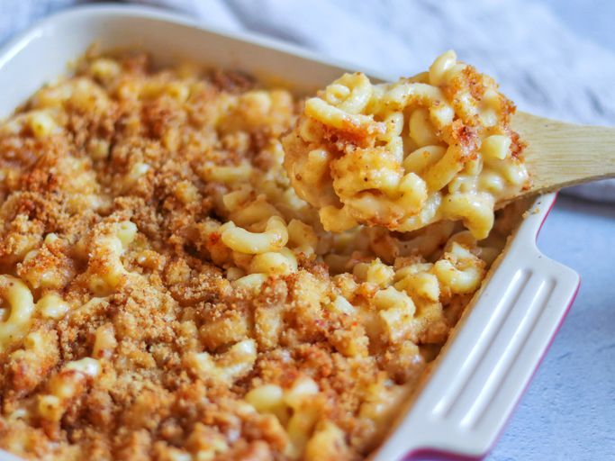

Home
Mac n Cheese

Description
A simple but delicious mac n cheese recipe. Serves 4.
Ingredients
- Butter
- Flour
- Macaroni (225g)
- Milk (2½ cups)
- Parmesan (½ cup)
- Shredded cheese (2 cups)
Steps
- Preheat the oven to 175°C. Grease an 8-inch square baking dish.
- Bring a large pot of lightly salted water to a boil. Add macaroni and simmer, stirring occasionally, until tender yet firm to the the bite, about 8 minutes; this will finish cooking in the oven. Drain and transfer to the prepped baking dish.
- While the macaroni is cooking, melt ¼ cup butter in a medium skillet over low heat. Whisk in flour and stir until the mixture becomes paste-like and light golden brown, 3 to 5 minutes.
- Gradually whisk 2½ cups of milk into the flour mixture and bring to a simmer. Stir in shredded cheese and parmesan, season with salt and pepper.
- To make the bread crumb topping, melt 2 tablespoons of butter in a skillet over medium heat. Add breadcrumbs; cook and stir until well coated and browned. Spread breadcrumbs over the macaroni and cheese, then sprinkle with paprika.
- Bake in the oven until the top is golden brown and the mac n cheese is bubbling, about 30 minutes.